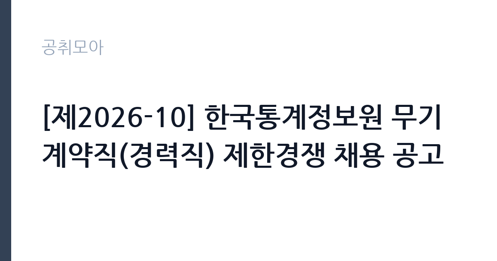

[공공기관] [제2026-10] 한국통계정보원 무기계약직(경력직) 제한경쟁 채용 공고
(재)한국통계정보원 · 대전 · 마감 2026-10-26 (D-14) · 출처 잡알리오

한눈에 보는 모집 조건
| 기관 | (재)한국통계정보원 |
|---|---|
| 공고명 | [제2026-10] 한국통계정보원 무기계약직(경력직) 제한경쟁 채용 공고 |
| 고용형태 | 공무직 |
| 근무지 | 대전 |
| 게시일 | 2026-10-12 |
| 마감일 | 2026-10-26 (D-14) |
지원자격, 이렇게 읽으세요
- 공공기관 채용공시
- 세부 조건은 원문 공고문 확인
공통 요건은 연령과 성별, 학력 제한이 없으며, 기관 정년 연령인 만 60세를 초과하지 않아야 한다는 점입니다. 기관 인사규정 제16조의 결격사유에 해당하지 않아야 하고, 임용 예정일부터 근무가 가능해야 하며, 해외여행에 결격사유가 없어야 합니다. 분야별 요건은 전산 분야가 응용 소프트웨어 개발과 정보기술 인프라 운영, 유지관리 관련 수행 경력 3년 이상이며, 데이터 분야가 데이터 구축과 운영 관련 수행 경력 3년 이상입니다. 지원 시 주의하실 점은 경력 3년의 입증 방식입니다. 경력증명서에 수행 업무와 근무 기간이 구체적으로 기재되어야 하며, 개발과 운영, 데이터 구축 관련 내용이 드러나지 않으면 심사에서 인정받기 어렵습니다. 제한경쟁 방식이므로 해당 분야 경력이 없는 분은 지원 대상이 아니라는 점도 확인하시기 바랍니다.
이 공고의 포인트
해당 공고의 첫 번째 포인트는 정년이 보장되는 무기계약직이라는 점입니다. 기간제와 달리 계약 종료 부담이 없고 만 60세 정년까지 근무할 수 있어 안정성이 정규직에 준합니다. 두 번째 포인트는 경력 3년 이상 제한경쟁이라는 점입니다. 신입 지원자가 대거 몰리는 공개경쟁과 달리 경력 보유자끼리만 겨루므로, 해당 경력을 보유한 분들께는 실질 경쟁률이 낮아지는 효과가 있습니다. 세 번째 포인트는 연령과 학력 제한이 없다는 점입니다. 경력과 실무 능력 중심으로 평가받으므로, 비전공자라도 관련 경력이 있다면 충분히 도전할 수 있습니다. 네 번째 포인트는 국가통계포털 운영 기관이라는 전문성입니다. 케이오시스 같은 국가 단위 통계 인프라를 다루는 경험은 정보기술 분야에서 희소한 이력이 됩니다.
전형은 어떻게 진행되나
전형 절차의 세부 내용은 첨부된 공고문 원문에서 확인하시기 바랍니다. 일반적으로 공공기관 경력직 채용은 서류전형과 면접전형의 순서로 진행되며, 전산과 데이터 분야는 실무 역량을 검증하는 절차가 포함될 수 있습니다. 서류전형에서는 경력증명서와 경력기술서를 중심으로 직무 연관성을 평가하므로, 수행했던 프로젝트와 담당 역할, 사용 기술, 성과를 체계적으로 정리하시기 바랍니다. 면접전형에서는 통계 시스템 운영과 데이터 처리 실무 경험을 묻는 질문에 대비하시기 바랍니다. 접수 마감일이 2026년 10월 26일이며 임용 예정일이 11월 30일이므로, 합격 후 한 달 남짓한 기간에 이직 절차를 마무리해야 합니다. 현재 재직 중인 분은 해당 일정을 미리 고려하시기 바랍니다.
원문에서 확인한 전형 방식
※ 자세한 내용은 반드시 첨부된 공고문 원문 참고 요망 ※ <공통> ○ 연령·성별·학력 제한 없음(단, 기관 정년연령 만 60세를 초과하지 않은 자) ○ 인사규정 제16조(결격사유)에 해당하지 않는 자 ○ 임용예정일(2026. 11. 30.)부터 근무 가능한 자(임용예정일은 협의 가능) ○ 해외여행에 결격사유가 없는 자 <전산> ○ 응용SW개발, IT인프라 운영·유지관리 관련 수행 경력 3년 이상인 자 <데이터> ○ 데이터 구축·운영 관련 수행 경력 3년 이상인 자
이런 분께 추천해요
- 응용 소프트웨어 개발과 정보기술 인프라 운영 경력이 3년 이상인 분께 추천합니다.
- 데이터 구축과 운영 실무를 다뤄본 경험이 있어 국가통계 인프라 분야에서 일하고 싶은 분께 추천합니다.
- 연령과 학력 제한 없는 정년보장 일자리를 찾는 대전과 충청권 정보기술 경력자에게 추천합니다.
지원 전 체크리스트
- 경력 3년 입증 항목입니다. 수행 업무와 근무 기간이 명시된 경력증명서를 준비하시기 바랍니다.
- 정년 연령 확인 항목입니다. 기관 정년인 만 60세를 초과하지 않는지 확인하시기 바랍니다.
- 임용일 근무 가능 여부입니다. 2026년 11월 30일부터 근무가 가능한 상태인지 점검하시기 바랍니다.
- 공고문 원문 숙독 항목입니다. 공고 요약이 아닌 첨부 원문의 세부 조건을 반드시 확인하시기 바랍니다.
모집 일정과 제출 타이밍
공고 게시일은 2026년 10월 12일이며 접수 마감일은 10월 26일입니다. 접수 기간이 약 2주이므로 경력기술서 작성과 증빙 발급에 착수하시기 바랍니다. 임용 예정일은 2026년 11월 30일이며 협의가 가능하다고 안내되어 있습니다. 재직 중인 분은 합격 후 인수인계 기간을 감안해 임용일 협의 가능 여부를 사전에 확인해 두시기 바랍니다. 이후 전형 일정은 공고문 원문과 기관 채용 게시판 안내를 확인하시기 바랍니다.
직무 이해하기: 공공기관
모집 분야의 실무를 이해하면 지원서 작성이 수월해집니다. 전산 분야는 국가통계포털 케이오시스의 응용 소프트웨어 개발과 정보기술 인프라 운영, 유지관리를 맡습니다. 국가 단위 통계 서비스는 접속량이 많고 안정성이 중요하므로, 장애 대응과 성능 관리 경험이 실무에 도움이 됩니다. 데이터 분야는 통계자료 구축과 운영 업무를 맡으며, 조사 자료의 수집과 정제, 적재, 품질 관리 사이클을 다룹니다. 통계 데이터는 정확성이 생명이므로 꼼꼼한 검증 습관이 중요합니다. 두 분야 모두 통계청과 유관 기관 협업이 잦아 공공 통계 체계 전반에 대한 이해가 있으면 적응이 빠릅니다.
자기소개서 작성 팁
자기소개서는 경력 3년의 실무 내용을 프로젝트 중심으로 풀어내는 것이 핵심입니다. 전산 지원자는 개발했던 시스템의 규모와 담당 모듈, 사용 기술, 장애 대응과 성능 개선 성과를 수치로 적시하시기 바랍니다. 데이터 지원자는 구축했던 데이터의 규모와 품질 관리 방식, 자동화 개선 사례를 구체적으로 서술하시기 바랍니다. 기관 이해 항목에서는 국가통계포털 운영이라는 공공적 임무에 대한 관심을 연결하시기 바랍니다. 통계 인프라의 안정성과 정확성이 국민 생활에 미치는 영향을 언급하면 진정성이 높아집니다. 제한경쟁 채용이므로 거창한 포부보다 실무 즉시 투입 가능성을 보여주는 서술이 효과적입니다.
면접 준비 포인트
면접에서는 실무 역량과 조직 적합성이 핵심 평가 요소입니다. 전산 분야는 시스템 아키텍처와 장애 대응 경험, 인프라 운영 지식을 묻는 질문에 대비하시기 바랍니다. 실제 운영했던 서비스의 트래픽 규모와 대응 사례를 구조적으로 답변하시기 바랍니다. 데이터 분야는 데이터 품질 관리와 대용량 처리 경험을 묻는 질문이 나올 수 있습니다. 데이터 오류를 발견하고 해결했던 사례처럼 정확성과 관련된 경험이 좋은 소재가 됩니다. 공통적으로는 공공기관 특유의 보안 규정과 절차 준수 의지를 보여주시는 것이 좋으며, 대전 근무와 정년보장 조직에 대한 안정적인 정착 의지도 어필하시기 바랍니다.
급여·근무조건 읽는 법
급여 수준은 공개된 집계 자료와 원문 확인을 병행하시기 바랍니다. 취업 정보 플랫폼 집계에 따르면 한국통계정보원의 신입 초봉은 약 2,784만원, 평균 연봉은 약 4,218만원 수준으로 안내되어 있습니다. 해당 수치는 공공데이터를 토대로 추정한 참고값이므로 실제와 차이가 있을 수 있습니다. 무기계약직의 초임은 기관 보수규정에 따라 경력을 환산해 획정되므로, 경력 3년 이상 보유자의 실제 초임은 신입 초봉보다 높게 책정될 가능성이 큽니다. 정확한 초임과 수당, 상여 체계는 접수 전 공고문 원문과 기관 인사 담당 부서를 통해 확인하시기 바랍니다. 출처는 자소설닷컴 기업정보의 공공데이터 기반 집계이며, 확정 공시가 아니라는 점을 유의하시기 바랍니다.
자주 묻는 질문
- 무기계약직도 정년이 보장됩니까?
무기계약직은 기간의 정함이 없는 근로계약으로 기관 정년인 만 60세까지 근무할 수 있습니다. 다만 세부 근로조건은 공고문 원문에서 확인하시기 바랍니다. - 비전공자도 지원할 수 있습니까?
학력 제한이 없으므로 전공과 무관하게 지원 가능합니다. 다만 전산과 데이터 분야 수행 경력 3년 이상이 필수이므로 해당 경력 입증이 핵심입니다. - 임용 예정일 조율이 가능합니까?
공고문에 협의 가능하다고 안내되어 있습니다. 재직 중인 분은 합격 후 기관과 일정을 조율하시기 바랍니다.
함께 보면 좋은 공고
[공공기관] 대한법률구조공단 원주출장소 청년인턴 공개경쟁 채용시험 공고 — 마감 2026-10-27[공공기관] 2026년 학산공원국민체육센터 GX 프로그램 강사(명상) 위촉공고 — 마감 2026-10-15[공공기관] 2026년 제3차 재단법인 남원시바이오산업연구원 정규직(일반직/행정직) 채용 공고 — 마감 2026-10-27출처: 잡알리오 공개정보를 바탕으로 공취모아가 정리한 안내글입니다. 모집 조건·일정은 변경될 수 있으니 지원 전 반드시 원문 공고문을 확인하세요. 본 글은 정보 제공용이며 합격을 보장하지 않습니다.